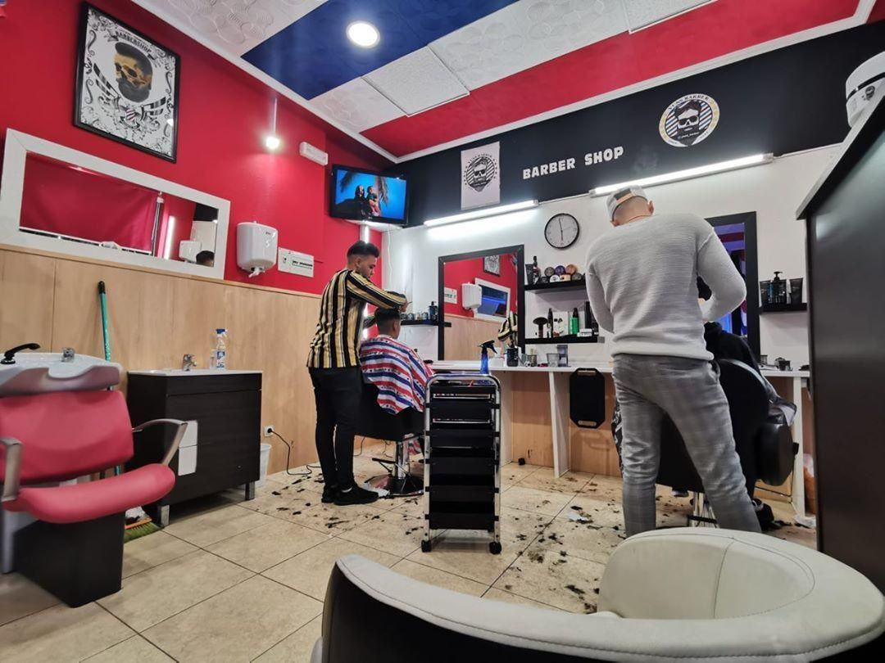
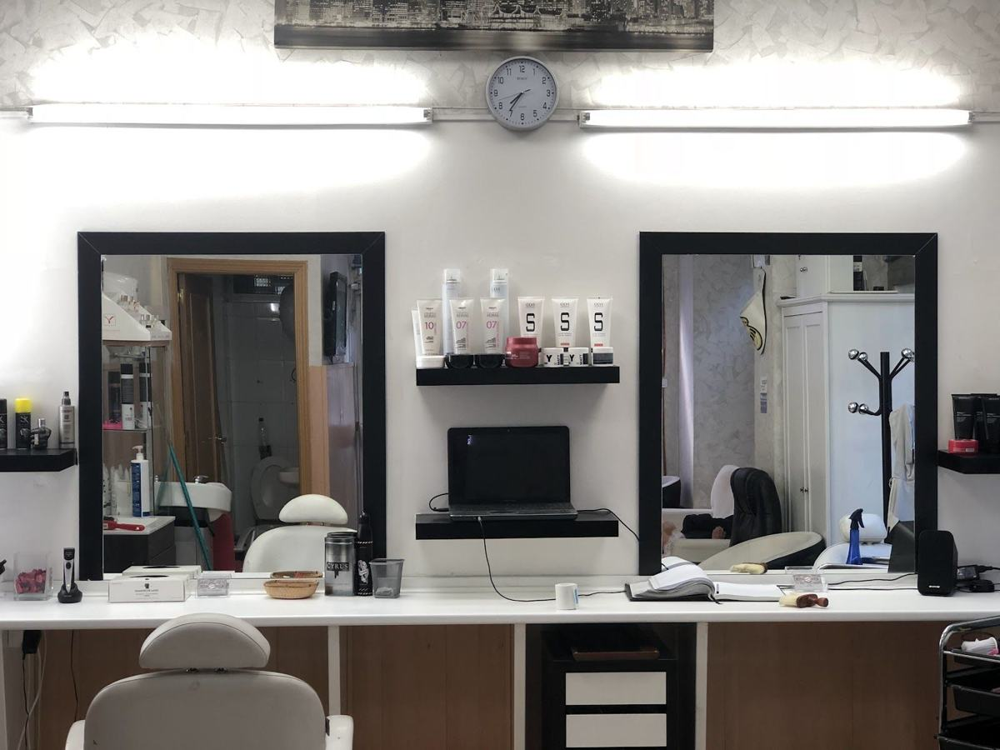
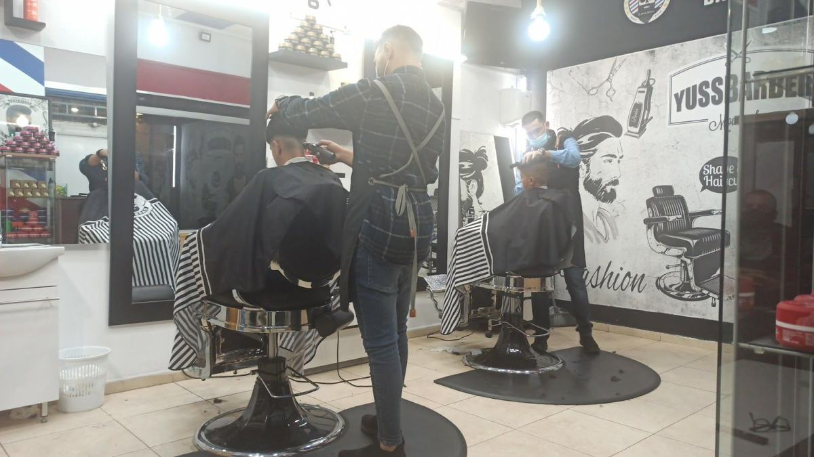
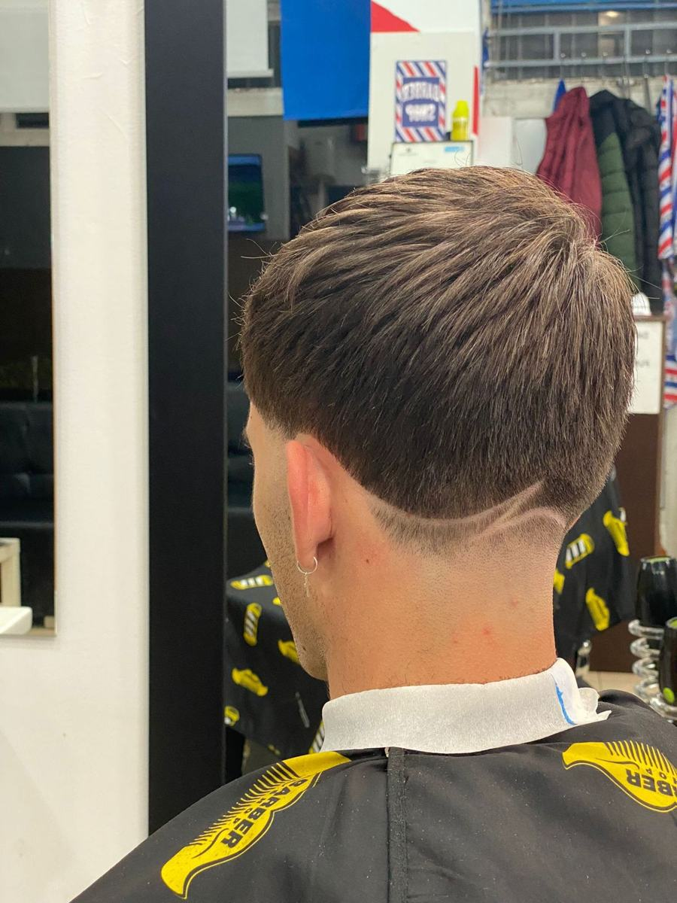
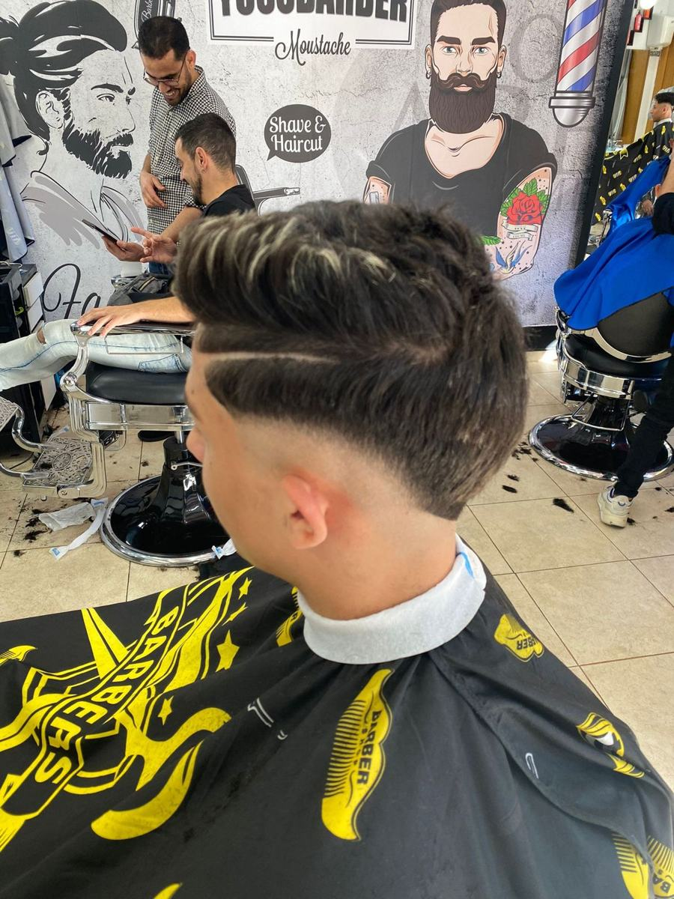
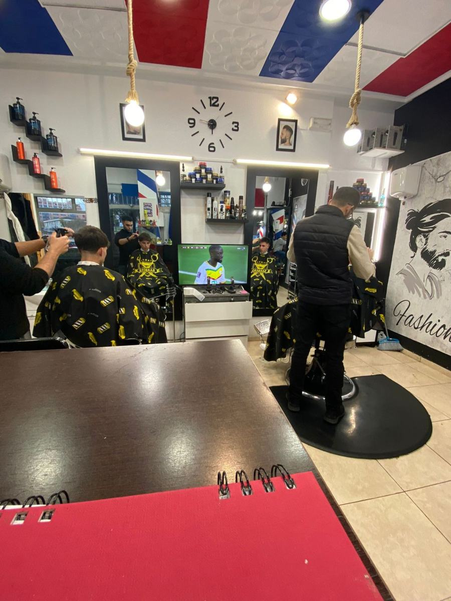
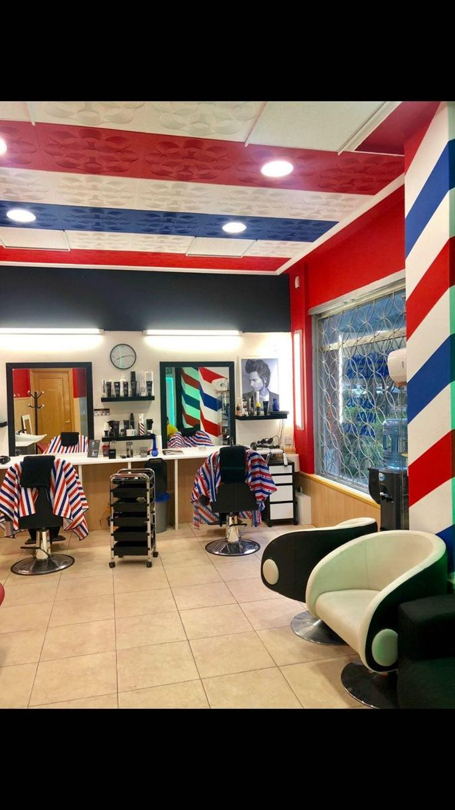

En la calle Gando, 1, en Aluche. Corte clásico, degradado y barba con el mimo de un barbero de barrio.
Pedir cita por WhatsApp






| Lunes | 10:00–14:00, 16:30–20:30 |
|---|---|
| Martes | 10:00–14:00, 16:30–20:30 |
| Miércoles | 10:00–14:00, 16:30–20:30 |
| Jueves | 10:00–14:00, 16:30–20:30 |
| Viernes | 10:00–14:00, 16:30–20:30 |
| Sábado | 9:30–15:00 |
| Domingo | Cerrado |